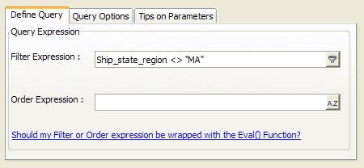

Filtering Records to Exclude a Single Field Value
This demonstration of Action Scripting adds a button to the Edit_Customer_Info form. This script will restrict all the records that the form displays to those where "MA" is not the value in the Bill_State_Region field.
Sketch a button on the form.
Enter "Not MA" into the Label field.
Click Launch Script Editor.
Click Add New Action.
Select "Query" from the Category list and "Run Custom Query" from the Action list. Click OK.
Click the Filter
 button at the right side of the Filter
field.
button at the right side of the Filter
field.Select the "Bill_state_region" field, the "is not equal to" operator, and enter "MA" into the first condition. Click OK.
The result looks like this.

Click Next > Finish > Finish to return to the Form Editor.
Click
 .
.
See Also
Clearing the Record Filter, Filtering Records to Include a Single Field Value, Filtering Records to Include Multiple Field Values